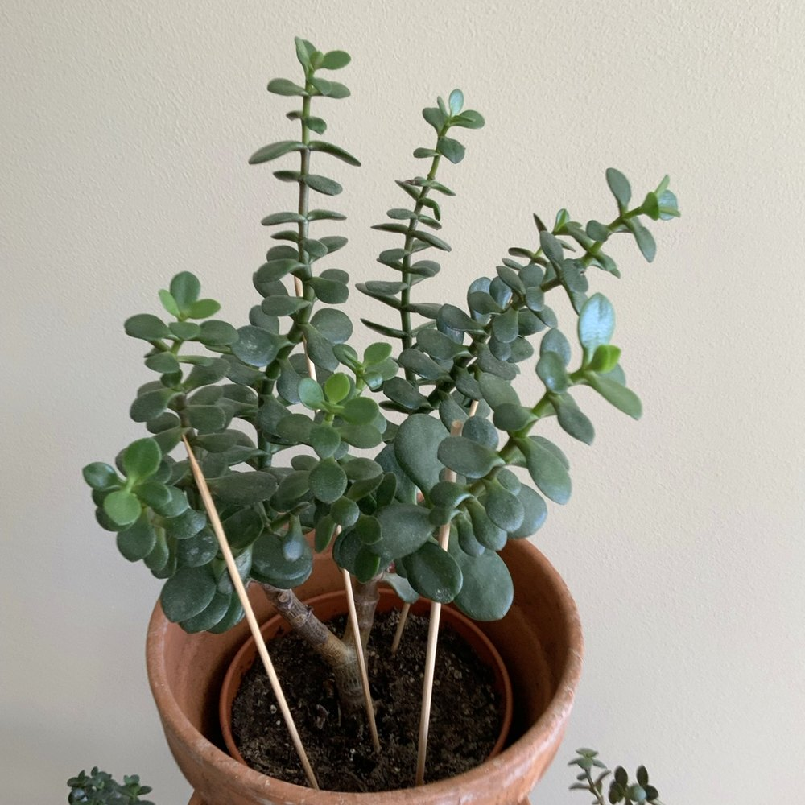

Houseplant care and project timelines.
Mother plant, separated pups, repotting, and follow-up care.

Pruned June 29, 2026. Track branching and monthly growth photographs.
Indoor care reference and photo record.